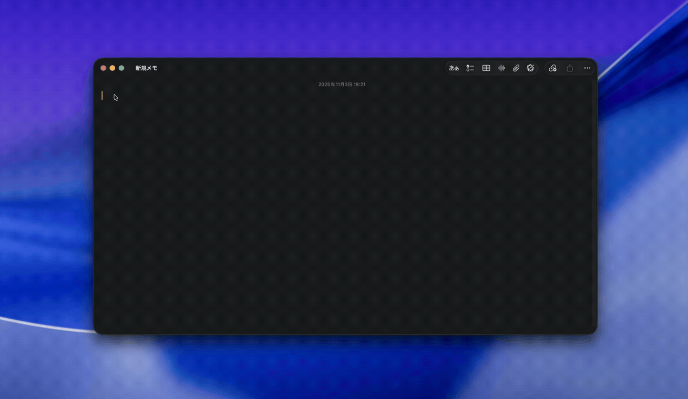

TYPE FETCH
入力したい場所で呼び出す。 確定した文字だけを、前面へ。
テキストを入力…
確定すると前面のアプリに入力されます。
OPERATION / THREE MOVES
キーを押す。 書く。 渡す。
TypeFetchは前面アプリの流れを止めません。 必要な瞬間だけ現れ、確定したら消えます。
-
⌘⇧Space
呼び出す
入力したいアプリを前面にしたまま、既定ショートカットで表示。 設定から好きなキーへ変更できます。
-
Return
そのまま書く
日本語入力や複数行のテキストにも対応。 Return単独は改行として使えます。
-
⌘Return
前面へ渡す
確定すると元のアプリを再び前面にし、キャレット位置へ挿入。 成功したTypeFetchは、そのまま静かに閉じます。
BEHAVIOR / EXACTLY
確定とキャンセルの境界。
- CONFIRM⌘Return
- 入力内容をキャレット／選択範囲へ挿入して閉じます。
- CANCELEsc
- 何も変更せず、入力ウィンドウだけを閉じます。
- EMPTY⌘Return
- 空のまま確定した場合はキャンセルとして扱います。
- RETRY⌘Return
- 挿入に失敗した場合は、内容を保持したまま再表示します。
REAL MOTION / TYPEFETCH
前面アプリへ、途切れずに。
アクセシビリティAPIを優先して挿入。 難しい入力先には別方式へ自動で切り替えます。

UNDER THE PANEL
軽く、ローカルに、10言語で。
- 対応OS
- macOS 13 Ventura 以降
- 動作
- メニューバー常駐
- 表示言語
- 日本語を含む10言語
- プライバシー
- 解析・トラッキングなし
GET / TYPEFETCH
入力の一歩を、ひとつ減らす。
TypeFetchはmacOS 13以降で動作します。 購入・ダウンロードはitch.ioから。